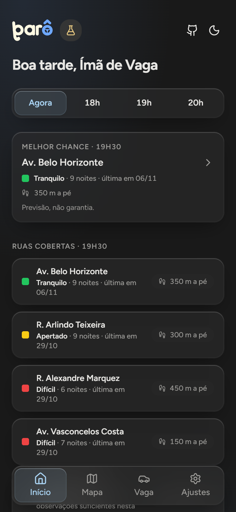

Equipe Brasil · Prof. Maxwell Gomes ESAMC Uberlândia · Novembro de 2026

Origem do projeto
Como surgiu o problema
Uberlândia tem cerca de 768 mil habitantes e mais de 560 mil veículos. No entorno da ESAMC, estudantes e professores chegam às mesmas ruas quase ao mesmo tempo.
768 mil
Habitantes em Uberlândia
IBGE, 2026
560 mil+
Veículos na cidade
uma das maiores taxas de motorização do interior de Minas IBGE, 2026
90 min
Janela em que 75% chegam
das 18h30 às 19h59, Pesquisa de campo
O problema em uma frase
Quem vai de carro ao entorno da ESAMC não sabe, antes de sair, em quais ruas e horários tem chance real de estacionar.
02
0012
Pesquisa de campo
Questionário com 100 respostas válidas, de 17 a 22 de setembro de 2026, no entorno da ESAMC.
03
Público
Demanda concentrada em duas janelas
57%
dirigem até a região: 52% de carro e 5% de moto
75%
chegam entre 18h30 e 19h59
85%
saem entre 21h e 22h59
96%
repetem os mesmos horários toda semana
A noite, das 17h às 23h
Chegada 75%
Saída 85%
17h18h19h20h21h22h23h
04
Resultados · P4 e P5
Quando o público chega e quando sai
Horário de chegada
% das 99 respostas válidas
Horário de saída
% das 99 respostas válidas
05
Resultados · P8 e P9
Onde se consegue vaga, e quão previsível ela é
Ruas onde consegue vaga
% de quem respondeu (n=81), múltipla escolha
Previsibilidade da vaga
mesma rua, dia e horário (n=85)
54%Pouco previsível
38%Previsível
8%Não sei dizer
Mesmo com rotina fixa (96%), a chance de vaga muda bastante para mais da metade.
06
Da dor à ideia
De um dado de campo a um produto
Dor
54% acham a vaga pouco previsível e 23% levam mais de 20 minutos até o destino.
Insight
O horário de quem chega é previsível: 96% têm rotina fixa. A vaga é que não é.
Pergunta
Como mostrar, antes de sair, a chance de vaga em cada rua no horário da chegada?
Ideia
Parô: app que estima a chance por rua e horário a partir de observações de campo.
07
Como a chance é calculada
Chance, não garantia
A chance vem só das observações de campo. Os registros de vaga viram as saídas previstas da noite, mostradas à parte.
1
Observação
Contagem, feita em campo numa noite, das vagas existentes e ocupadas de uma rua coberta numa faixa horária.
2
Cheia
A rua coberta está cheia quando a ocupação é de 85% ou mais.
3
Chance
Percentual das observações do semestre em que a rua não estava cheia. 7 de 10 noites dá 70%.
08
Por dentro do cálculo
Como o servidor calcula a chance
Cálculo puro, sem banco nem relógio, coberto por testes no Vitest.
Só contam observações do semestre em dias letivos normais